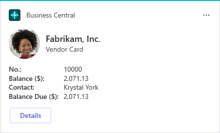
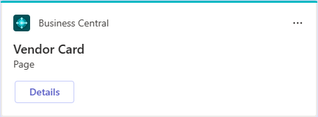

Verwalten der Microsoft Teams-Integration mit Business Central
GILT FÜR: Business Central Online
Dieser Artikel bietet einen Überblick darüber, was Sie als Administrator zur Steuerung der Microsoft Teams-Integration in Business Central unternehmen können.
In Microsoft Teams
Mindestanforderungen
In diesem Abschnitt werden die Mindestanforderungen für die Verwendung der Business Central-App-Funktionen in Teams beschrieben.
Erforderliche Lizenzen
Die Business Central-App erfordert eine Teams-Lizenz über ein Microsoft 365 Business- oder Enterprise-Abonnement. Eigenständige Teams-Abonnements wie Microsoft Teams (kostenlos) oder Microsoft Teams Essentials werden nicht unterstützt.
Die meisten Funktionen der Business Central-App für Teams erfordern außerdem eine Business Central-Lizenz, wie in der folgenden Tabelle gezeigt.
Funktion Business Central Lizenz Suchen Sie nach Business Central-Kontakten. 
Einen Link zu einem Business Central-Datensatz in eine Unterhaltung einfügen und ihn als Karte versenden. Geben Sie einen Link von einer Seite in Business Central an die Teams Unterhaltung weiter. Eine Karte eines Business Central-Datensatzes in einer Unterhaltung anzeigen. Weitere Details für eine Karte eines Business Central-Datensatzes in einer Unterhaltung anzeigen. Öffnen Sie einen Seitenlink in Business Central aus einer Unterhaltung heraus. URL-Vorschau zulassen
Die Richtlinieneinstellung URL-Vorschau zulassen muss aktiviert sein. Andernfalls kann keine Karte für Business Central Links generiert werden, die in eine Teams-Unterhaltung eingefügt werden. Weitere Informationen zu dieser Einstellung finden Sie unter Nachrichtenrichtlinien in Teams verwalten.
Verwalten der Business Central App (optional)
Als Teams-Administrator können Sie alle Apps für Ihre Organisation verwalten, einschließlich der Business Central-App. Sie können die Business Central-App für Ihr Unternehmen genehmigen oder installieren, die Installation der App durch Benutzer blockieren und vieles mehr.
Weitere Informationen finden Sie in der Microsoft Teams Dokumentation unter:
- Ihre Apps im Microsoft Teams Admin Center verwalten
- App-Einrichtungsrichtlinien in Microsoft Teams verwalten
In Business Central
Mindestanforderungen
Business Central-Version:
Business Central 2021 Veröffentlichungszyklus 1 oder höher. Die Teams-Integration wird nur für Business Central Online unterstützt, nicht für On-Premises.
Codeunit 2718 Seitenzusammenfassungsanbieter wird als Webdienst veröffentlicht:
Diese Codeunit wird standardmäßig als Webdienst veröffentlicht. Die Codeunit ist Teil der Business Central-Systemanwendung. Sie wird verwendet, um die Felddaten für eine Business Central-Seite abzurufen, die einer Teams-Unterhaltung hinzugefügt wurde. Weitere Informationen zum Veröffentlichen von Webdiensten finden Sie unter Einen Webdienst veröffentlichen.
-
Die Kontaktsuche, Seiten und Daten, die Benutzer in einer Teams-Unterhaltung anzeigen und bearbeiten können, werden größtenteils durch deren Berechtigungen in Business Central gesteuert.
- Um nach Kontakten zu suchen, müssen Benutzer mindestens über Leseberechtigung zur Tabelle Kontakte verfügen.
- Um einen Business Central-Link in eine Teams-Unterhaltung einzufügen und diesen zu einer Karte zu erweitern, müssen Benutzer mindestens über die Leseberechtigung für die Seite und ihre Daten verfügen.
- Sobald eine Karte in eine Unterhaltung übermittelt wurde, kann jeder Benutzer in dieser Unterhaltung diese Karte ohne Berechtigungen für Business Central anzeigen.
- Um weitere Details für eine Karte anzuzeigen oder den Datensatz in Business Central zu öffnen, müssen Benutzer über Leseberechtigung für die Seite und ihre Daten verfügen.
Um Daten zu ändern, benötigen Benutzer Änderungsberechtigungen.
Weitere Informationen finden Sie unter Berechtigungen an Benutzer und Gruppen zuweisen.
Installieren der Business Central-App mit Hilfe der zentralen Bereitstellung
Im Admin Center Microsoft Teams konfigurieren Sie die Richtlinien für die Einrichtung der Apps von Teams für das Unternehmen. Im Admin Center von Teams können Sie die Funktion Zentrale Bereitstellung verwenden, um die Business Central-App in Teams automatisch für alle Benutzer in Ihrem Unternehmen, für bestimmte Gruppen oder für einzelne Benutzer bereitzustellen.
Hinweis
Um die zentralisierte Bereitstellung einzurichten, muss Ihr Teams-Konto mindestens über die Rolle [Teams-Administrator](https://learn.microsoft.com/de-de/entra/identity/role-based-access-control/permissions-reference#teams-Administrator] verfügen.
- Wählen Sie in Business Central die
 . Symbol, geben Sie Teams App Zentrale Bereitstellung ein und wählen Sie dann den entsprechenden Link. Oder wählen Sie hier, um die Seite direkt zu öffnen.
. Symbol, geben Sie Teams App Zentrale Bereitstellung ein und wählen Sie dann den entsprechenden Link. Oder wählen Sie hier, um die Seite direkt zu öffnen. - Lesen Sie die Informationen auf der Seite Einrichten der Business Central-App für Teams und wählen Sie dann Weiter, wenn Sie bereit sind.
Öffnen Sie das Teams Admin Center und führen Sie die folgenden Schritte aus.
- Gehen Sie zu Teams Apps > Richtlinien einrichten.
- Erstellen Sie eine neue Richtlinie oder wählen Sie die Richtlinie aus, die Sie für die Installation der Business Central-App verwenden möchten, und wählen Sie dann Apps hinzufügen.
- Suchen Sie auf der Seite Installierte Apps hinzufügen nach Business Central und wählen Sie diese aus.
Wählen Sie Hinzufügen.
Business Central sollte nun unter Installierte Apps für die Richtlinie erscheinen.
Konfigurieren Sie weitere Einstellungen und wählen Sie dann Speichern.
Weitere Informationen finden Sie unter Richtlinien zum Verwalten der App-Einrichtung Microsoft Teams in der Teams-Dokumentation.
- Gehen Sie zurück zu Teams App Zentrale Bereitstellung in Business Central und wählen Sie Fertig.
Wichtig
Es kann bis zu 24 Stunden dauern, bis die Richtlinie für die Einrichtung der App festgelegt ist und die App den Benutzern bereitgestellt wird.
Datenschutz und Compliance verwalten
Microsoft Teams bietet umfassende Kontrollen für die Einhaltung und Verwaltung sensibler oder persönlich identifizierbarer Daten—einschließlich Daten, die von der Business Central App zu Chats und Kanälen hinzugefügt wurde.
Verstehen wo Business Central Karten gespeichert werden
Nachdem eine Karte an einen Chat gesendet wurde, werden die Karte und die auf der Karte angezeigten Felder in Teams kopiert. Diese Informationen unterliegen den Teamrichtlinien für Ihr Unternehmen, z. B. Richtlinien zur Aufbewahrung von Daten. Bei der Anzeige von Kartendetails werden keine Daten im Detailfenster in Teams gespeichert. Die Daten bleiben in Business Central gespeichert und wird nur von Teams abgerufen, wenn der Benutzer die Details anzeigen möchte.
- Erfahren Sie mehr darüber, wo Teams diese Daten speichert: Speicherort der Daten in Microsoft Teams.
- Weitere Informationen zu Aufbewahrungsrichtlinien in Teams finden Sie unter Aufbewahrungsrichtlinien in Microsoft Teams.
Beschränken des Kartenaustauschs
Sie verhindern, dass bestimmte Benutzer oder Gruppen Karten an Chats oder Kanäle senden, indem Sie Nahrichten-Richtlinien einrichten, die die Einstellung URL-Vorschau deaktivieren. Weitere Informationen zu dieser Einstellung finden Sie unter Nachrichtenrichtlinien in Teams verwalten.
Sie können auch Informationssperren verwenden, um zu verhindern, dass Einzelpersonen oder Gruppen miteinander kommunizieren. Weitere Informationen finden Sie unter Informationssperren in Microsoft Teams.
Funktionen zur Verhinderung von Datenverlust im Microsoft 365 Security & Compliance Center können nicht speziell auf Karten angewendet werden. Sie können jedoch auf die Chat-Nachrichten angewendet werden, die die Karten enthalten.
Antworten auf Datenenanforderungen
Sie ermöglichen Teammitgliedern und Teambesitzern, Nachrichten mit vertraulichen Karten zu löschen, indem Sie Nachrichtenrichtlinien einrichten, wie Besitzer können gesendete Nachrichten löschen und Benutzer können gesendete Nachrichten löschen. Weitere Informationen finden Sie unter Messaging-Richtlinien in Teams verwalten.
Inhaltssuche und eDiscovery Compliance-Funktionen im Microsoft 365 Security & Compliance Center können nicht auch auf Karten angewendet werden.
Weil Kartendaten in Teams eine Kopie der Daten in Business Central sind, können Sie auch Business Central Funktionen zum Exportieren der Kundendaten sofern erforderlich verwenden. Weitere Informationen zum Datenschutz finden Sie Business Central in den FAQs zum Datenschutz für Business Central-Kunden.
Datensatzdaten auf Karten ein- oder ausblenden
Wenn ein Datensatz mit anderen in einem Teams-Chat oder -Kanal geteilt wird, wird eine Karte mit Feldern angezeigt, die Daten über den Datensatz enthalten. Alle Empfänger können diese Daten (oder die Datensatzzusammenfassung) standardmäßig anzeigen, unabhängig von ihrer Lizenz oder ihren Berechtigungen in Business Central. Wenn Sie ein Administrator sind, können Sie die Karteneinstellungen unterstützte Einrichtungsanleitung verwenden, um zu verhindern, dass die Datensatzzusammenfassung auf Karten in Teams angezeigt wird. Durch das Ausblenden der Datensatzzusammenfassung werden alle Felder und Bilder entfernt, die Schaltfläche Details und andere Nicht-Datensatzinformationen werden jedoch weiterhin auf der Karte angezeigt.
| Zusammenfassung aktivieren | Zusammenfassung deaktivieren |
|---|---|
|  |  |
Sie konfigurieren die Einstellung pro Umgebung. Wenn Sie also die Datensatzzusammenfassung ein- oder ausschalten, wirkt sich dies auf alle Unternehmen in der Umgebung aus.
Öffnen Sie in Business Central die Umgebung, die Sie ändern möchten.
Tipp
Wählen Sie zum Wechseln der Umgebung Strg+O.
- Wählen Sie die Symbol, geben Sie Karteneinstellungen ein, und wählen Sie dann den entsprechenden Link.
- Lesen Sie die Informationen zu den Karteneinstellungen und wählen Sie dann Weiter, wenn Sie fertig sind.
- Auf der Datensichtbarkeit-Seite, schalten Sie die Datensatzzusammenfassung anzeigen an, um Daten auf den Karten anzuzeigen, oder aus, um die Daten auszublenden.
- Wählen Sie Nächste und befolgen Sie die Anweisungen, um die Einrichtungsanleitung abzuschließen.
Ähnliche Informationen
Business Central und Microsoft Teams Integration Übersicht
Die App Business Central für Microsoft Teams installieren
Häufig gestellte Fragen zu Teams
Teams Problembehebung
Entwickeln für Teams Integration
Starten Sie eine kostenlose Testversion!
Kostenlose E-Learning-Module für Business Central finden Sie hier